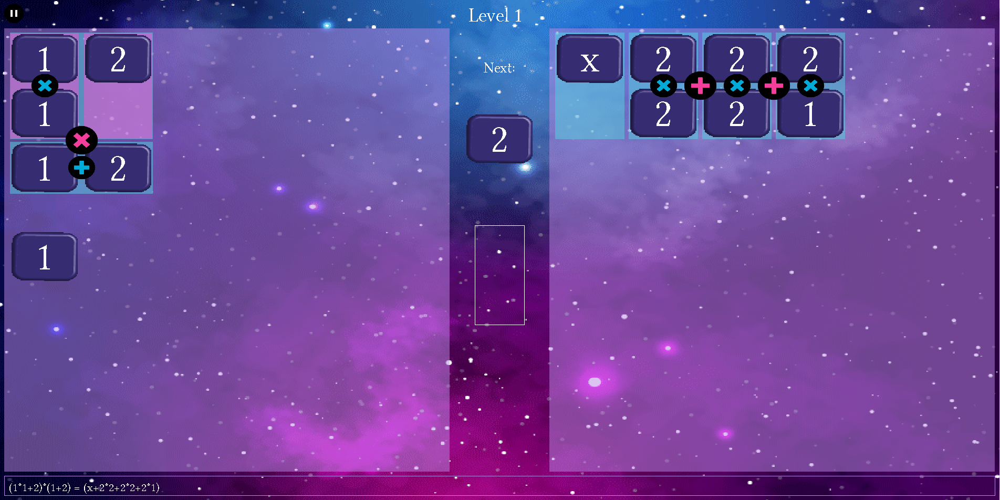

Algebrain is a game you can play for free. Click here to try it. It's in the Beta stage, so please give me feedback.

It's a video game about algebra, inspired by puzzle games such as Tetris / Tetris Attack / Dr. Mario / Puyo Puyo. However, when played 2 player, it's a cooperative game.
It's not intended to teach you algebra, but to train the brain pathways that solve algebra equations, while (most importantly) being fun. I got the idea after noticing similarities between puzzle games and algebra equations.
You can try the tutorial to learn how to play - if the tutorial didn't teach you, that feedback would help too.
Algebrain can be played using a mouse or touch screen. The tutorial teaches you how to play using a mouse or touch screen.
You could instead use a game controller (e.g. XBox or PS3/4/5 controller, or other controllers for PC gaming). Here are the controls for a game controller:
Directional pad: move the cursor
B button: switch the orientation of the cursor (vertical / horizontal)
A button: evaluate the tiles under the cursor (add / multiply them together if they're numbers, or collect like terms / expand / factor as appropriate)
X button: switch the order of the expressions under the cursor (commutativity).
L1 Button / R1 Button: Move an expression to the other side of the equation (if there's an arrow showing in the middle of the screen).
Y button: immediately cause the next new group of tiles to appear, or the moving tiles to slide into place.
Start: pause menu, with option to quit the game
It's also possible to play with a keyboard, though this isn't recommended. Here are the keyboard controls:
Arrow keys: move the cursor
Spacebar: switch the orientation of the cursor (vertical / horizontal)
Enter: evaluate the tiles under the cursor (add / multiply them together
if they're numbers, or collect like terms / expand / factor as
appropriate)
Tab: switch the order of the expressions under the cursor (commutativity).
Shift: Move an expression to the other side of the equation (if there's an arrow showing in the middle of the screen).
Page Down: immediately cause the next new group of tiles to appear, or the moving tiles to slide into place.
Esc: pause menu, with option to quit the game